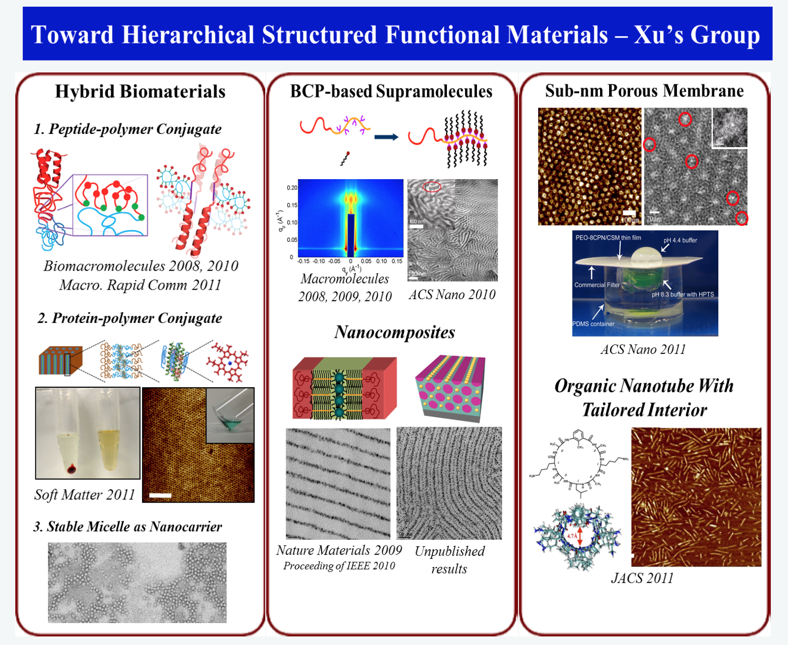
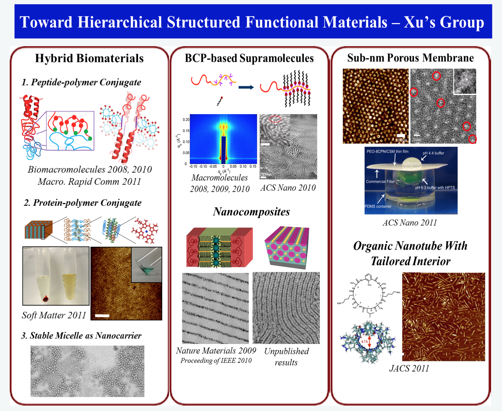

Future technologies depend on the development of functional materials having:
These require one to select the right building blocks, understand the principles underpinning the self-assembly, and use these principles to direct the assemblies at various length scales to obtain targeted functional materials. More importantly, we need to develop a versatile methodology to generate new functional materials simply by substituting building blocks, instead of re-building them from scratch. Numerous building blocks have been explored to achieve this end and obtaining functional materials to meet these requirements remains a significant challenge to the soft material community.
Our group focuses on generating hierarchical functional soft materials using synthetic polymers, peptides, proteins, small organic molecules and nanoparticles as building blocks. Each offers unique properties and are complimentary to each other. Natural proteins have complexities in terms of structure and functionaly unmatched by synthetic materials. De novo designed peptides are minimalistic natural proteins that mimic natural protein functionalities but are subject to degradation. Small organic molecules, especially those with optical, electronic and magnetic properties, can be readily synthesized with molecular control to provide built-in functionalities. Nanoparticles, due to their size, exhibit unique properties not seen in macroscopic materials and constitute essential building blocks in the fabrication of nanodevices. It is non-trivial to obtain macroscopic assemblies of either small molecule or nanoparticle at low cost. Polymers with different architectures can be synthesized and are amenable to various processing techniques. Developments in polymer sciences provide guidance to manipulate their assemblies at different length scales. However, generating molecular level assemblies with designer functionalities using polymers alone is challenging. Synergistic assemblies of these selected building blocks clearly have tremendous potential to construct technologically important functional materials. By developing fundamental understanding of the physics of assemblage, our group aims to generate hierarchical structures spanning multi-length scales down to few nanometers with built-in biological, electrical and magnetic functionalities.
Currently, our group is engaged in three major research activities to address the challenge of multi-length scale, hierarchical functional assemblies using these building blocks:
